Практичний досвід · журнал «ДентАрт» 2018 №3
Спеціальні ефекти в реставрації зубів. Частина I
SPECIAL EFFECTS IN THE RESTORATION OF TEETH. PART I
Ольга Пономаренко,клініка-студія «Аполлонія» (м. Полтава, Україна)
«Увага до дрібниць породжує досконалість, а ось досконалість уже не дрібниця». Мікеланджело Буонарроті
Обов'язкова умова створення естетичних реставрацій – максимально природний їх зовнішній вигляд, вписаний у загальну клінічну картину. Провідні стоматологічні бренди, які випускають матеріали для прямих реставрацій зубів, працюють над удосконаленням і оптимізацією властивостей композитних мас, посилюючи до краю їх міцність; поряд з цим триває постійна робота в естетичному напрямку, розробляються ефективні формули для виконання непомітних і довговічних прямих реставрацій.
У міру того як поліпшуються реставраційні матеріали, естетичні результати реставраційного лікування також постійно підвищуються. Для того, щоб скопіювати композитними матеріалами натуральні тканини зуба, потрібно мати інформацію про властивості використовуваного матеріалу. Було б зручно для нас, клініцистів, якби компанії-виробники домовилися між собою і почали випуск композитних систем з подібними характеристиками опаковості і прозорості відтінків.
А доки цього не сталося, клініцист повинен постійно вдосконалюватися і вивчати нові матеріали, знати їх позитивні риси і недоліки, підлаштовуватися під роботу з ними. Важливо мати свій рецепт для вирішення всіх основних завдань у реставрації зубів з прогнозованим і довгостроковим результатом, у поєднанні з високими показниками естетики навіть у складних клінічних випадках. Завдання стоматолога полягає в пошуку гармонії між функціональними вимогами та індивідуальною естетикою кожного пацієнта.
Дуже часто зустрічаються ситуації, коли неможливо стандартними протоколами підбору кольору композиту здійснити повну інтеграцію зробленої реставрації у загальноклінічну картину. Спробуємо розібратися в можливостях підкреслення вікових ефектів та індивідуальних особливостей у різних клінічних ситуаціях.
Маніпулювання з кольором оператор може здійснювати шляхом використання додаткових ефект-фарб, окрім основних дентинових та емалевих композитних мас. Натуральні зуби часто мають певні індивідуальні характеристики, наприклад, білі або бурштинові включення, тріщини емалі, мамелони і плями. Використання забарвлювання, характеризації реставрації, полегшує можливість створення ілюзії природних зубів. І тут особливу увагу слід звернути на оптичні включення вродженого характеру, такі як флюороз і гіпоплазія, також ми маємо додаткові можливості відтворення ефекту опалесценції емалі та ефекту гало. Імітація невеликих дефектів і морфологічних змін, які вплинули на структуру зубних тканин через старіння і функціональне зношування, забезпечує гармонійне підлаштовування реставрації у загальну клінічну картину.
У процесі створення реставрації для характеризації колірної конструкції рекомендують використовувати такі інгредієнти:
- модифікатори – ефект-фарби;
- інструмент з тонким кінчиком;
- гліцерин – air blok;
- аплікатор.
Інтенсивні світлі маси високої опаковості підкреслюють білі ділянки, опалесцентні маси мають високу прозорість і переливчастість, характеризуючі маси надають особливих колірних характеристик певним ділянкам зуба.
Технічно при адаптації барвників застосовують або метод фрезерування, коли фарбу вносять у попередньо підготовлену бором зону між шарами реставрації, або метод моделювання – нанесення характеризуючих мас у процесі реставрації.
Слід підкреслити, що оптичні ефекти, які використовуються в реставрації, створюються не тільки фарбуванням, але й формоутворенням, конструюванням з урахуванням індивідуальних особливостей зубів пацієнтів.
Ефект білих плям
Виникнення білих ділянок на поверхні зубів найчастіше пов'язане з патологічним станом емалевого об'єму, це може бути недостатня мінералізація, гіпоплазія емалі або білі плями при флюорозі, а також інші види дезорганізації будови емалі. Білі колірні зони декальцифікації мають значну вираженість щодо основного кольору зубів. Для створення інтенсивних ефектів білих плям можливе застосування методу їх симуляції на поверхні реставрації композитними модифікаторами білого кольору різної вираженості і опаковості. Також має значення локалізація та площа інтенсивних ділянок.
Для спрощення при плануванні реставрації розрізняють такі варіанти форми інтенсивних ефектів:
- Пляма – біла ділянка відносно правильної форми з чіткими межами.
- Хмара – розмита зона білого кольору з ділянками більшої і меншої насиченості, які чергуються.
- Смуги – горизонтально орієнтовані, зазвичай проходять по всій вестибулярній або щічній поверхні коронки зуба, з нерівномірною шириною простору між ними і злегка розмитими контурами.
Оскільки кожен клінічний випадок унікальний, можливе застосування комбінації кількох форм забарвлювання в разі індивідуального підбору характеризації.
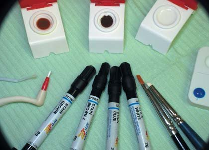
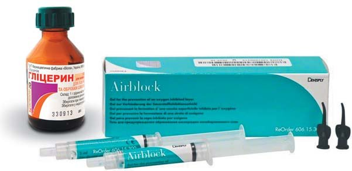
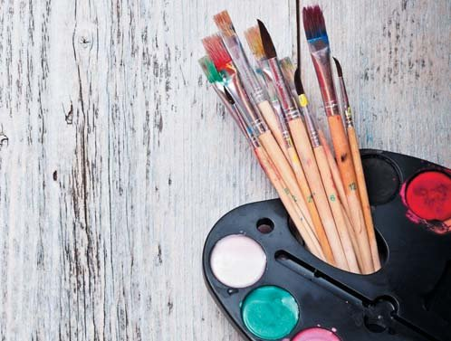
Клінічний приклад 1
У клініку звернувся молодий пацієнт з генералізованою формою флюорозу. Скарги були на неестетичний вигляд передніх зубів. Великі пігментні плями займають більше половини поверхні зуба. Запропоновано метод естетичної реабілітації зубів у прямій техніці.
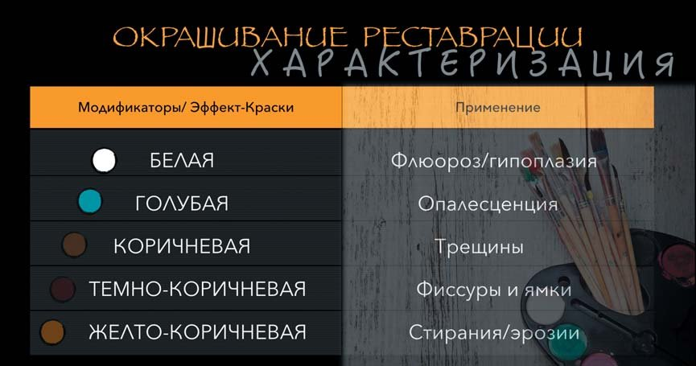
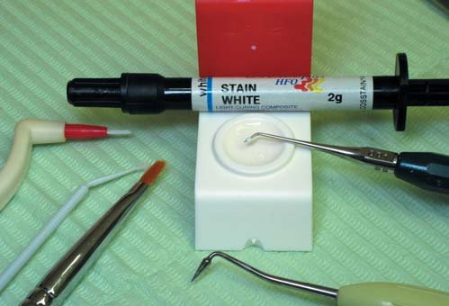
Флюорозна емаль включає ділянки демінералізації і гіпермінералізації. Показник опаковості плямистих ділянок високий – до 80 одиниць, і щоб підлаштуватися, потрібний матеріал з подібними ж показниками опаковості.
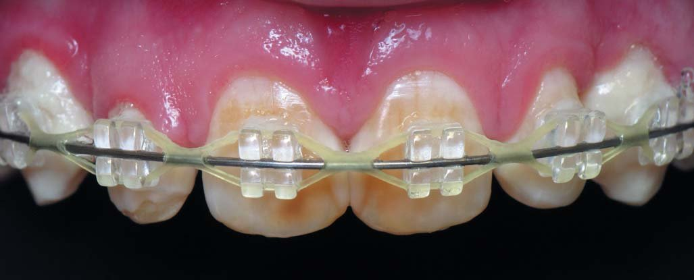
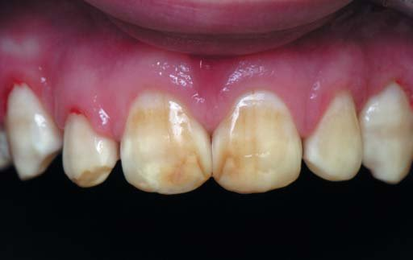
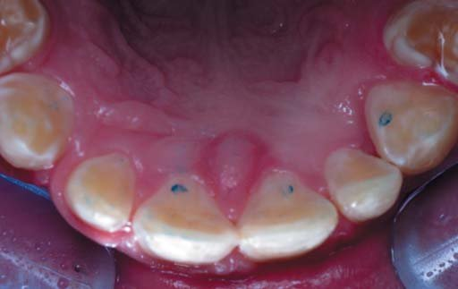
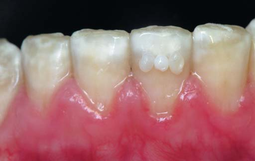
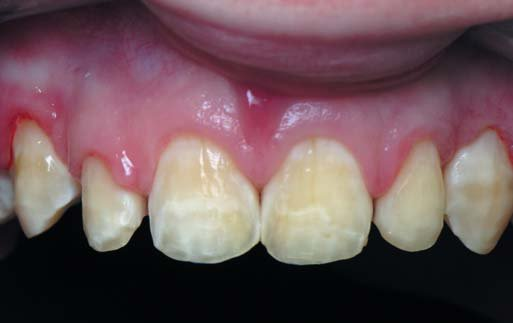
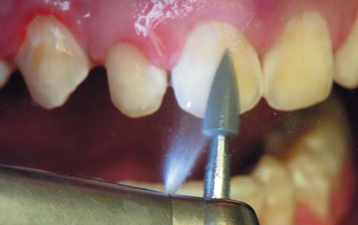
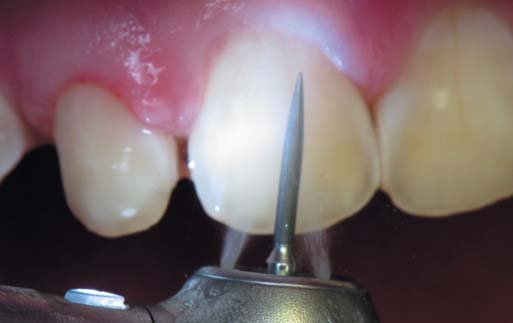
Щадне препарування в межах пігментації і блискучого шару емалі фінішними борами зернистістю 30 мк, з подальшим доопрацюванням поверхні шліфувальними формами Enhance (Dentsply Sirona) з водяним охолодженням.
Щоб зроблена реставрація не відрізнялася за кольором, при усуненні дефектів каріозного і некаріозного походження у зубах, що мають виражені колірні акценти – плями гіпоплазії або флюорозу, потрібне відтворення цих індивідуальних особливостей. Реставрація ікла була виконана в багатошаровій техніці, для імітації плащового дентину обрано композитний реставраційний матеріал Ceram X Dentine&Enamel, відтінок D3 (Dentsply Sirona), для основної емалі за колірною конструкцією підійшов відтінок А1 Esthet X HD (Dentsply Sirona), на поверхні якого укладені модифікатори фарби білого кольору в запланованій конфігурації. Інтенсивні композитні маси були накладені до остаточного емалевого шару, щоб трохи розтушувати і згладити вираженість кольорових плям. Прозорий шар відтінку WE Esthet X HD (Dentsply Sirona) став завершальним у реставрації ікла. Використання композитних фарб білого кольору дозволило виконати характеризацію ефекту білих плям, максимально наближену до вигляду натуральної флюорозної емалі.

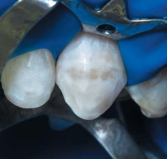
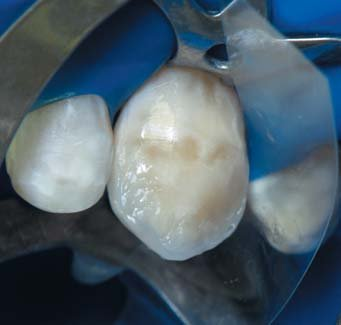
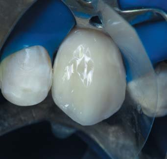
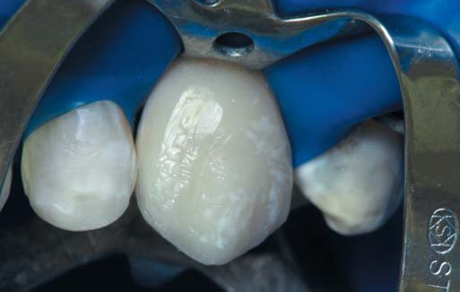
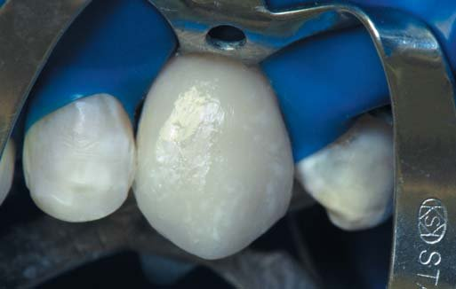
Після розрахунку зубного ряду запланована реконструкція зубів. Композитні ламінати шести фронтальних зубів. Етапи реставрації зуба 23.
Кінчиком спеціального пензлика або ендодонтичним файлом без надлишку набирали фарбу і легкими дотиками переносили на поверхню затверділого композиту – інтенсивній зоні слід надати бажаної форми.
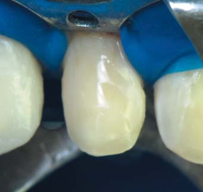
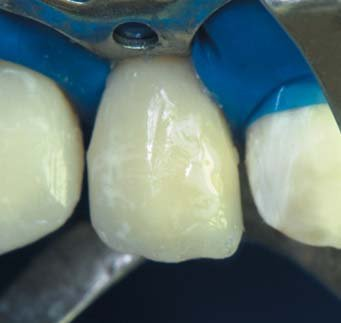
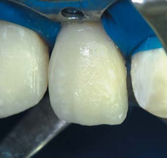
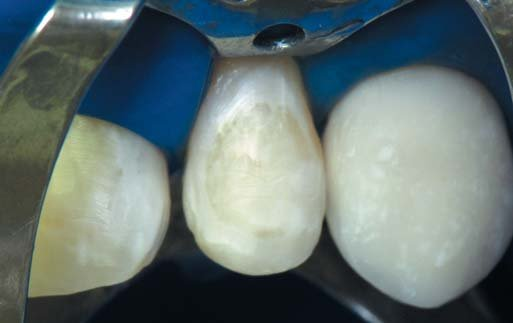
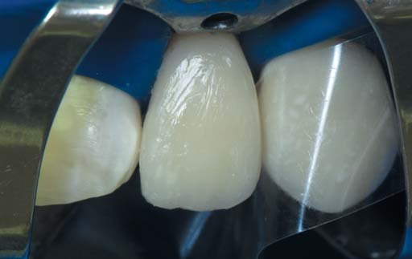
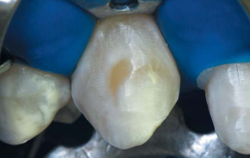
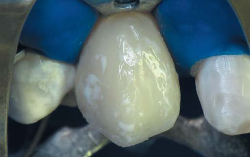
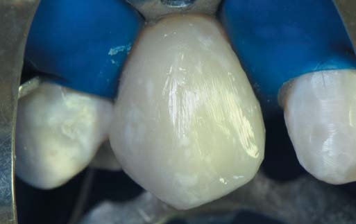
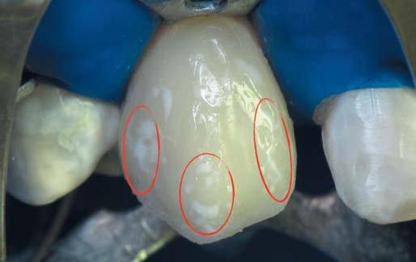
Етапи реставрації зуба 13. Кінчиком спеціального пензлика або ендодонтичним файлом без надлишку набирали фарбу і легкими дотиками переносили на поверхню затверділого композиту – інтенсивній зоні слід надати бажаної форми. Етапи реставрації зубів 12, 22.
Наступним обов'язковим етапом є покриття характеризації прозорим шаром композиту, що буде перешкоджати надалі вимиванню відтінкового пігменту з реставрації при їді і чищенні зубів.
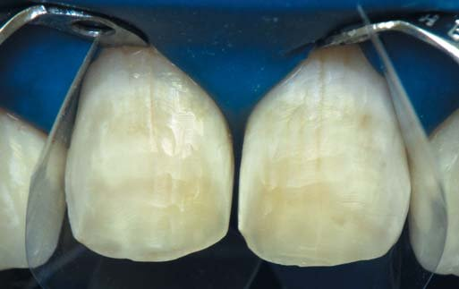
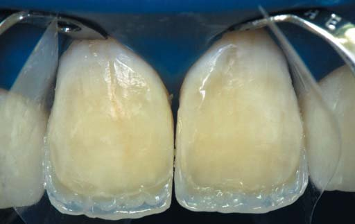
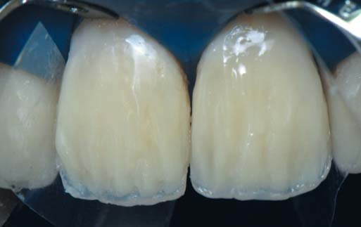
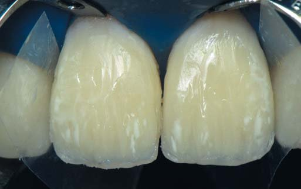
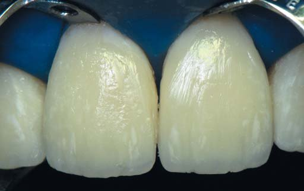
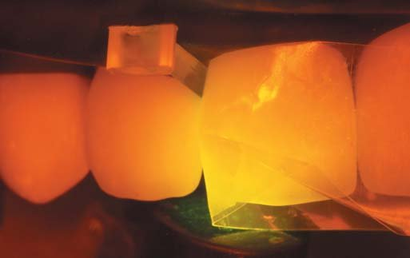
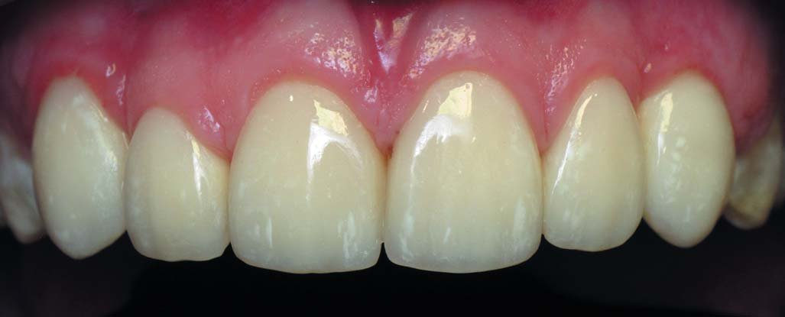
Покрокова реставрація центральних різців виконана в техніці біоміметики тими самими відтінками, з урахуванням топографічних меж відновлюваних тканин. Фронтальний вигляд реставрованих зубів після полірування пастами Prisma Gloss Regular і Prisma Gloss ExtraFine (Dentsply Sirona) демонструє глянсовий блиск поверхні.
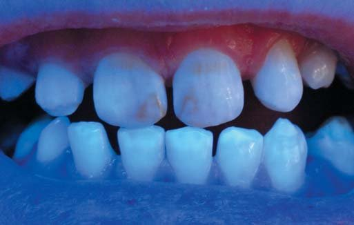
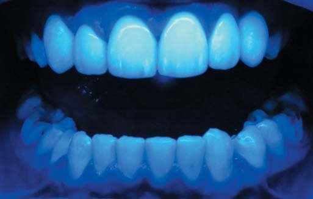
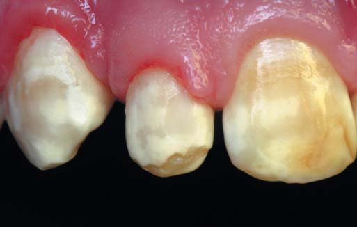
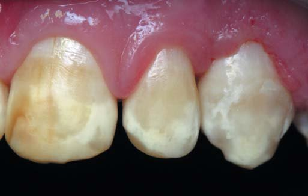
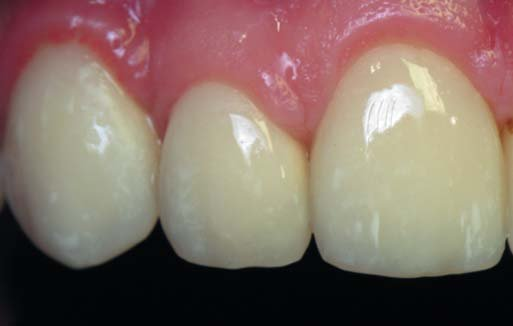
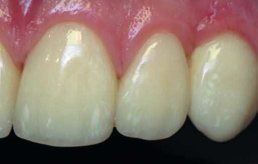
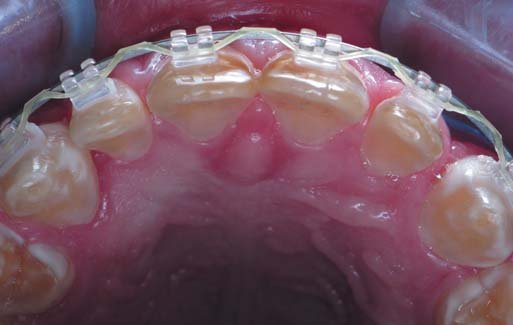
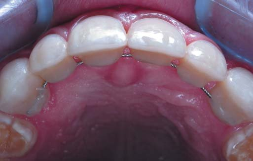
При порівнянні первинного вигляду зубів і ситуації після реставрації спостерігається зниження флуоресценції зубів до реставрації, а після реставрації маємо оптимальні показники флуоресценції матеріалу Esthet X HD (Dentsply Sirona). При порівнянні фронтального вигляду зубів з позиції форми була досягнута гармонія за заздалегідь спланованими пропорціями.
Індивідуально підібрана колірна конструкція органічно вписала реставровані зуби в загальний вигляд усмішки пацієнта.
На момент набуття нового вигляду усмішки ми отримали задовільну естетику, але з точки зору психологічного сприйняття себе, на жаль, не всі пацієнти здатні на моментальну перебудову в самооцінці — для цього потрібен час.
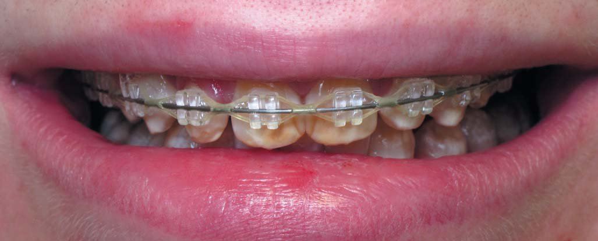
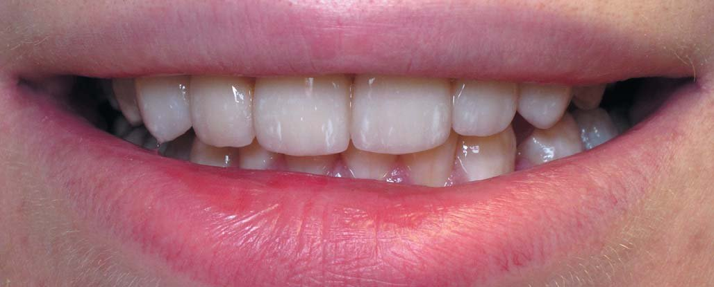
Ефект гало – «молодість зубів»
Ріжучий край складається з не підтриманої дентином, вільної емалі, вона є для світла високопроникною структурою в зоні ріжучого краю, де візуально визначаються блакитні і бурштинові зони опалесценції.
Опалесценція емалі – внутрішнє розсіювання світла мікропорами, що містять воду. Оптичні унікальні властивості емалі зумовлені її топографією і морфологічними особливостями.
Гало (у перекладі з давньогрецької – диск, коло, аура, німб, ореол) – природний оптичний феномен, кільце, що світиться, навколо джерела світла.
Саме поєднання ефектів розсіювання світла і повного внутрішнього відображення в емалі призводить до появи цього оптичного феномену. У зубах ефект варіює від явища чистої опалесценції – до її комбінації з контропалесценцією. Коли світло проходить крізь ріжучий край, довгі хвилі – червона частина спектру – проникають крізь емаль, при цьому не відбиваються як на поверхні, так і в глибоких об'ємах. У той же час короткі хвилі – синя частина спектру – відбиваються, і в результаті для нашого погляду ріжучий край здається блакитним із жовтуватим обідком. Чіткість цього ефекту гало також забезпечується створенням майданчика уздовж ріжучого краю різців при фінішній обробці – це так званий скіс по ріжучому краю.
Коли ми діагностували оптичні ефекти тканин пацієнта, ставиться головне завдання – відобразити ці ефекти в реставрації. Для імітації емалі прийнято застосовувати високопрозорі композитні маси, це надає реставрації більшої глибини кольору і допомагає створити ілюзію природних тканин.
Існує багато концепцій пошарового створення реставрації, і у кожної успішної методики є свої переконані послідовники. Це може бути філософія Біоміметики, ідею якої презентував 1996 року Сергій Радлінський. Тоді ж Лоренцо Ваніні опублікував свою Стратифікацію, пошарове створення композитних реставрацій, а за рік до того Дідьє Дічі надрукував свою Концепцію Натуральних Шарів, тобто цим школам понад 20 років! Популярна сьогодні методика Стайл Італьяно стала відомою трохи пізніше.
Блакитного світіння ріжучого краю можна домогтися підкресленням його за допомогою особливих опалесцентних композитних мас блакитного і бурштинового кольору, спеціально призначених для відновлення ріжучого краю і проксимальних ділянок. Однак застосування барвників зазвичай порушує проникнення світла, і є ризик надати реставрації неприродного зовнішнього вигляду і погіршити естетичний результат лікування.
Звичним для мене стилем роботи є принцип Біоміметики. Біоміметичний напрямок у реставрації зубів полягає в досягненні естетичного результату шляхом імітації окремих зубних тканин відповідними відтінками реставраційного матеріалу в топографії відновлюваного зуба. Для створення чіткого ефекту гало послідовникам цієї методики не потрібно використовувати ефект-фарби, досить застосувати матеріал, що має природну опалесценцію, з показником заломлення, як в емалевих шарах природних зубів, у цьому випадку оптичний феномен одержуємо автоматично, тільки граючи на взаємодії світла з прозорою емаллю ріжучого краю.
Клінічний приклад 2
Продемонстровано, як простою технікою можна досягти поліхроматичного результату за допомогою лише трьох відтінків навіть у такій складній структурі, як створення ефекту гало в ріжучому краї. А також подано варіант можливого переміщення рожевої зони естетики – краю ясен – шляхом збільшення обсягу екваторіальної зони коронок.
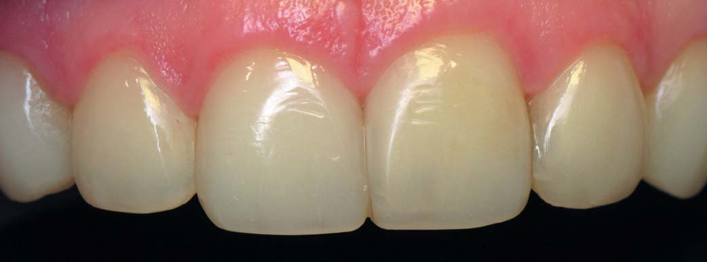
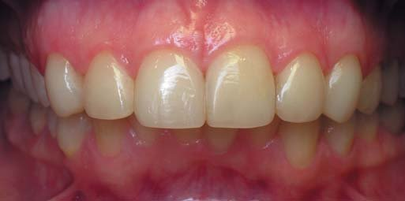
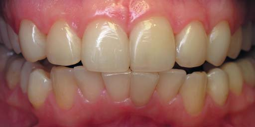
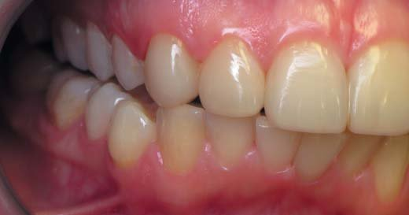
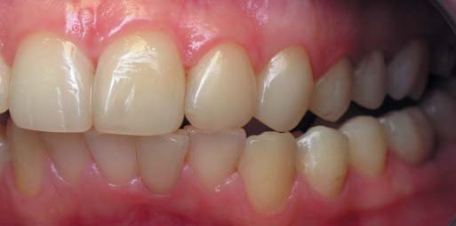
Після щадного препарування і видалення старих пломб зроблена адгезивна підготовка з вибірковим протравлюванням тканин і застосуванням універсальної адгезивної системи з Prime&Bond One Select (Dentsply Sirona).
Далі – пошарове накладання і полімеризація композитних пелюсток. У реставрації використовувалися відтінки А1, WE наногібридного реставраційного матеріалу Esthet X HD (Dentsply Sirona). Відновлення виконується крок за кроком, починаючи з внутрішніх шарів оральної стінки, і завершується пошаровим відтворенням топографічних шарів зовнішньої стінки переднього зуба. Для синхронності нанесення композитних шарів у їх топографічних межах реставрація двох центральних різців виконується одночасно.
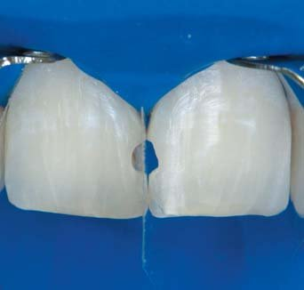
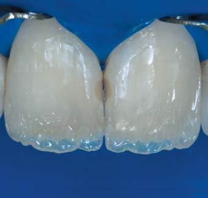
Етапи реставрації зубів 11, 12. Після щадного препарування і видалення старих пломб зроблена адгезивна підготовка з вибірковим протравлюванням тканин і застосуванням універсальної адгезивної системи з Prime&Bond One Select (Dentsply Sirona). Далі – пошарове накладання і полімеризація композитних пелюсток.
Співвідношення зубних рядів у різних позиціях оклюзії після реставрації. Завдяки оптимальним показникам флуоресценції матеріалу Esthet X HD в ультрафіолетовому спектрі спостерігається рівномірна інтеграція реставрації до власних тканин.
У зоні ріжучого краю має місце блакитна і бурштинова опалесценція без застосування спеціальних фарб. Цього результату досягнуто лише за рахунок поєднання товщини шарів оптично відповідних емалевих і дентинових відтінків композиту. Рельєф і структура поверхні зуба істотно впливають на естетичну інтеграцію реставрації в загальний вигляд фронтальної ділянки зубного ряду. Що змінилося в усмішці пацієнтки? Адже кардинальних змін особливо і не видно... Важливо, щоб ці легкі зміни вписалися в її індивідуальність!
На завершення були зроблені арт-фото з цікавим візажем губ як частина психологічної реабілітації – фототерапії. Для ілюстрації молодості зубів була обрана картина нашої колеги і талановитого художника з Челябінська Тетяни Рождественської.
Твір дуже реалістично відображає ефект гало, тут можна завважити дивовижну схожість з фінальними світлинами усмішки нашої пацієнтки – усе в цьому житті не випадкове!
Ефекти «старіння зубів»
На жаль, зуби мають тенденцію погіршуватися з плином років, поступово виявляючи все більше і більше вад. З віком товщина натуральної емалі зменшується в ході фізіологічного стирання, вона стає більш прозорою, склоподібною і більш гладенькою – усе це призводить до зниження яскравості. При стиранні емалевих об'ємів підлеглий дентин починає просвічувати, надаючи зубу насиченішого і темнішого вигляду. Емалеві тканини є проникною структурою, усі набуті дефекти інфільтруються пігментами від харчових барвників, викликаючи обмежену поверхневу чи глибоку пігментацію, особливо виражену при впливі нікотину або у поєднанні з віковими змінами зубів. Такі колірні характеризації обмежуються лише в емалевому шарі реставрації.
Яким же способом можлива імітація тріщин? Перший спосіб – це метод фрезерування, коли на остаточній стадії реставрації при формуванні емалевих шарів можна вирізати тріщину в композитній масі тонким інструментом, створюючи заглиблення, спрямоване в товщу зуба. На дно цього заглиблення накладається тонкий шар композитного текучого матеріалу емалевого відтінку, наприклад SDR, а потім і барвника відповідного кольору (білий, жовтий, бурштиновий, коричневий).
Другий варіант – під час моделювання останнього емалевого шару в ньому гострим інструментом робиться заглиблення під тріщину, потім вноситься композитний барвник і притискається наступною порцією емалевої маси. Для природнішого відтворення ефекту «старіння» можна на одному зубі імітувати кілька тріщин, розташованих паралельно одна одній.
Тут у стоматолога є можливість виявити себе в реставрації як художника, імпровізуючи в імітації дефектів і тріщин. Головне – знати міру і не перестаратися в надлишковій вираженості колірних ефектів, інакше є ризик професійної невдачі...
Найчастіше бажання пацієнтів орієнтовані на прагнення до естетичних норм, тому техніка імітації тріщин у реставрації – це свого роду ексклюзив і використовується в дуже рідкісних випадках. Неможливо зупинити старіння – це один з факторів життя, але чи не буде правильніше повернути усмішці колишню привабливість і молодість? Адже відновлення цілісності і висоти зубів – нескладне завдання, і це набагато простіше, ніж робити пластичні операції обличчя.
Висновки
Завершимо розмову найбільш підходящою до цієї теми цитатою з інтерв'ю із Сергієм Радлінським, взятою з книги «Шари» – стоматологічного бестселера від Горді Манаута.
«Питання. Для гармонійного поєднання естетичних реставрацій з оточуючими структурами іноді потрібне відтворення фізіологічних дефектів. У яких випадках ви вважаєте це допустимим?
Відповідь. Мене бентежить поняття «фізіологічні дефекти» і тим більше їх відтворення... Якщо дефект є, це вже патологія.
...Реставрація є результатом співпраці пацієнта і стоматолога. Пацієнт висловлює свої бажання, а стоматолог як клініцист і дизайнер усмішок обмежує їх рамками можливого.
Якщо стоматолог відновлює частину зуба, він зобов'язаний зробити штучну частину тотожною природній основі, а отже, потрібно відтворити і елементи вікових фізіологічних змін...»
Література
- Горди Манаута, Анна Салат. Слои. – М.: Азбука, 2014.
- Dietschi D. Layering concepts in anterior composite restorations. J Adhes Dent 2001;3:71-80.
- Vanini L. Light and color in anterior composite restorations. Pract Periodontics Aesthet Dent 1996;8:673-682.
- Радлинский С.В. Биомиметическое направление в реставрации зубов. – М.: Маэстро, 2002.
- Радлинский С.В. Реставрация передних зубов // ДентАрт. – 1998. – №3.
- Грисимов В. Оптическая анизотропия эмали зуба // ДентАрт. – 2016. – №1.